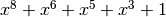

Analysis of NESSIE project cryptographic algorithms¶
The NESSIE call includes a request for a broad set of algorithms providing date confidentiality, data authentication, and entity authentication. These algorithms include block ciphers, stream ciphers, hash functions, MAC algorithms, digital signature schemes, and public-key encryption and identification schemes. In this chapter, several cryptographic algorithms from NESSIE (New European Schemes for Signature, Integrity, and Encryption) research project candidates are analysed.
Below you can find a legend describing the cryptographic criteria used in this chapter:
| NL | Nonlinearity |
| NL2 | 2-nd order nonlinearity |
| LD | Linearity distance |
| DEG | Algebraic degree |
| AI | Algebraic immunity |
| MAXAC | Absolute indicator |
 |
Sum-of-squares indicator |
| LP | Linear potential |
| DP | Differential Potential |
Hyperlinks to representations
Open the hyperlinks to representations below in a new browser window or in a new tab.
Anubis¶
Description¶
Anubis is a block cipher designed by Vincent Rijmen and Paulo S. L. M. Barreto as an entrant in the NESSIE project, a former research program initiated by the European Commission in 2000 for the identification of new cryptographic algorithms. Although the cipher has not been included in the final NESSIE portfolio, its design is considered very strong, and no attacks have been found by 2004 after the project had been concluded. It has a 8x8 S-box called S.
S¶
Representations¶
Polynomial function over  with irreducible polynomial
with irreducible polynomial  : Trace representation
: Trace representation
Polynomial representation in ANF
Walsh Spectrum representation (except first row and column):

Other useful information in cryptanalysis¶
Cycle structure:
| Cycle length | Number of cycles |
|---|---|
| 2 | 128 |
There are no linear structures
It has no fixed points
It has 2 negated fixed points: (0,1,1,0,1,1,0,0), (1,0,0,1,0,0,1,1)
Camellia¶
Description¶
Camellia is a symmetric key block cipher with a block size of 128 bits and key sizes of 128, 192 and 256 bits. It was jointly developed by Mitsubishi and NTT of Japan. The cipher has been approved for use by the ISO/IEC, the European Union’s NESSIE project and the Japanese CRYPTREC project. It has four 8x8 S-boxes called S1, S2, S3, S4.
Summary¶
| S-box | size | NL | LD | DEG | AI | MAXAC | |
LP | DP |
|---|---|---|---|---|---|---|---|---|---|
| S1 | 8x8 | 112 | 56 | 7 | 4 | 32 | 133120 | 0.015625 | 0.015625 |
| S2 | 8x8 | 112 | 56 | 7 | 4 | 32 | 133120 | 0.015625 | 0.015625 |
| S3 | 8x8 | 112 | 56 | 7 | 4 | 32 | 133120 | 0.015625 | 0.015625 |
| S4 | 8x8 | 112 | 56 | 7 | 4 | 32 | 133120 | 0.015625 | 0.015625 |
S1¶
Representations¶
Polynomial function over with irreducible polynomial : Trace representation
Polynomial representation in ANF
Walsh Spectrum representation (except first row and column):

Other useful information in cryptanalysis¶
Cycle structure:
| Cycle length | Number of cycles |
|---|---|
| 2 | 1 |
| 5 | 1 |
| 249 | 1 |
There are no linear structures
It has no fixed points. It has no negated fixed points
S2¶
Representations¶
Polynomial function over with irreducible polynomial : Trace representation
Polynomial representation in ANF

Other useful information in cryptanalysis¶
Cycle structure:
| Cycle length | Number of cycles |
|---|---|
| 10 | 1 |
| 13 | 1 |
| 51 | 1 |
| 71 | 1 |
| 111 | 1 |
There are no linear structures
It has no fixed points.
It has 3 negated fixed points: (0,1,0,1,1,1,0,0), (1,0,1,1,0,0,1,1), (1,1,1,1,1,1,1,0)
S3¶
Representations¶
Polynomial function over with irreducible polynomial : Trace representation
Polynomial representation in ANF

Other useful information in cryptanalysis¶
Cycle structure:
| Cycle length | Number of cycles |
|---|---|
| 5 | 1 |
| 68 | 1 |
| 183 | 1 |
There are no linear structures
It has no fixed points.
It has 1 negated fixed point: (1,1,1,0,1,0,1,0)
S4¶
Representations¶
Polynomial function over with irreducible polynomial : Trace representation
Polynomial representation in ANF

Other useful information in cryptanalysis¶
Cycle structure:
| Cycle length | Number of cycles |
|---|---|
| 10 | 1 |
| 13 | 1 |
| 51 | 1 |
| 71 | 1 |
| 111 | 1 |
There are no linear structures
It has no fixed points.
It has 3 negated fixed points: (0,0,1,0,1,1,1,0), (0,1,1,1,1,1,1,1), (1,1,0,1,1,0,0,1)
Grand Cru¶
Description¶
Grand Cru is a block cipher invented in 2000 by Johan Borst. It was submitted to the NESSIE project, but was not selected. It has a Non-linear Substitution Transformation which uses a 8x8 S-box called S.
S¶
Representations¶
Polynomial function over with irreducible polynomial  : Trace representation
: Trace representation
Polynomial representation in ANF

Other useful information in cryptanalysis¶
Cycle structure:
| Cycle length | Number of cycles |
|---|---|
| 2 | 1 |
| 27 | 1 |
| 59 | 1 |
| 81 | 1 |
| 87 | 1 |
There are no linear structures
It has no fixed points. It has no negated fixed points